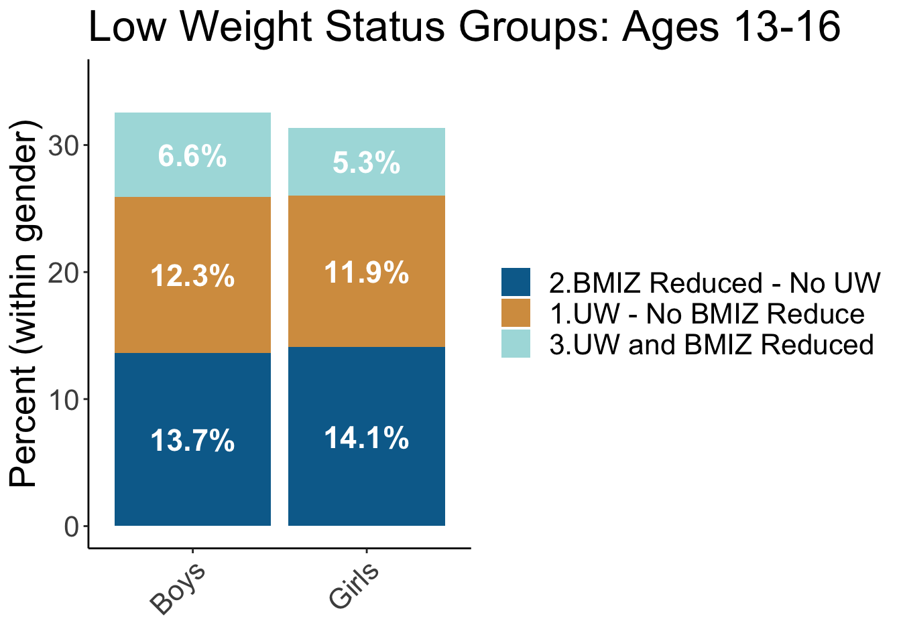
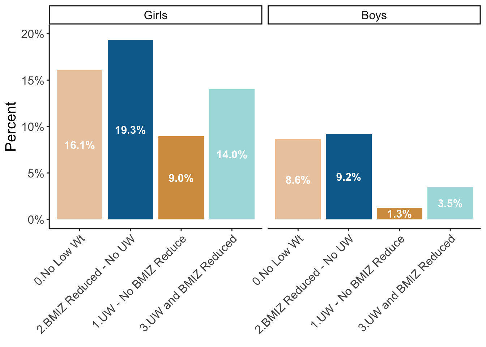
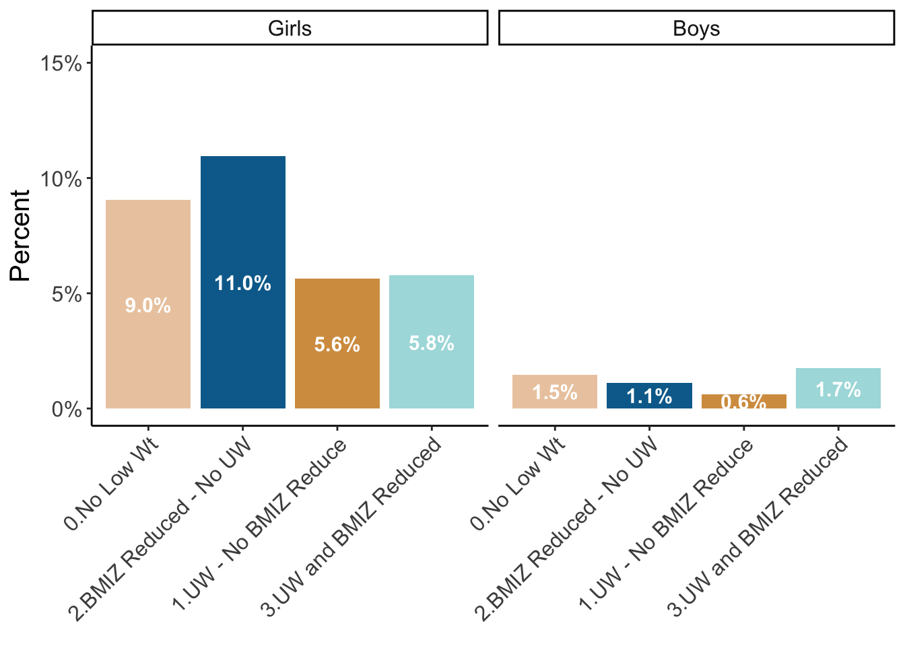
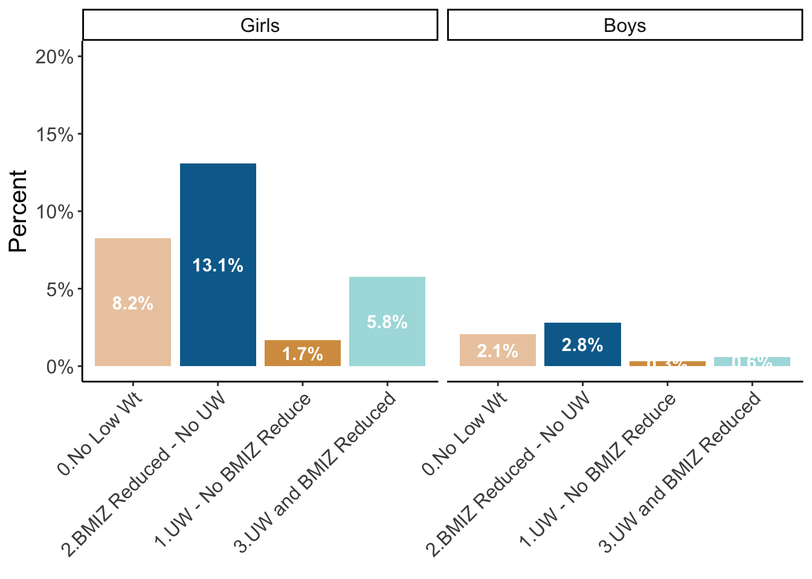

| Sex | Model | n below | % below | n above | % above |
|---|---|---|---|---|---|
| female | Mean | 617 | 19.42% | 272 | 8.56% |
| female | RW | 1175 | 36.98% | 780 | 24.55% |
| female | M1 | 913 | 28.74% | 469 | 14.76% |
| female | AbsVal >1 | 548 | 17.25% | 868 | 27.32% |
| male | Mean | 611 | 20.29% | 239 | 7.93% |
| male | RW | 1118 | 37.12% | 687 | 22.81% |
| male | M1 | 852 | 28.29% | 397 | 13.18% |
| male | AbsVal >1 | 570 | 18.92% | 1716 | 28.15% |
4 Prediction
Below we present examples of comparing expected vs. predicted BMIz values at ages from ages 13-16 in the ALSPAC Cohort
4.1 Age 13-16
As age 14 represents early onset of many ED behaviors, we replicated analyses above predicting out to age 16. For these analyses, we first defined falling outside of an expected prediction interval at any time between ages 13 and 15.9 as experiencing a BMIz reduction (or gain), and having any datapoint between ages 13-16 fall within the underweight or overweight range indicate presence of underweight or overweight status. When considered across these three
When looking across ages 13-16, 25.93% of boys and 26.03% of girls had experienced a BMIz reduction within the 13-16 age range based on the mean model, with the majority of those who experienced a BMIz reduction not being in the normal range or above (see Figure 4.1)

| Estimate | Std. Error | z value | Pr(>|z|) | |
|---|---|---|---|---|
| (Intercept) | -1.652 | 0.061 | -27.156 | 0.000 |
| low_wt_category2.BMIZ Reduced - No UW | 0.223 | 0.138 | 1.621 | 0.105 |
| low_wt_category1.UW - No BMIZ Reduce | -0.666 | 0.195 | -3.416 | 0.001 |
| low_wt_category3.UW and BMIZ Reduced | -0.162 | 0.238 | -0.682 | 0.495 |

Regarding Purging behavior, rates were low at this age (see Figure 4.3), with low cell sizes (n < 5) in several groups at age 16, leading to low power for these comparisons.

Fasting was a more common behavior, particularly amongst girls. Those in the underweight group reported the lowest levels of fasting, which was significantly lower than those who did not have a weight reduction and were not underweight at age 16 (Table 4.3). The highest levels were amongst girls who experienced a BMIz reduction but were not underweight (Figure 4.4), though this was not significantly higher than those who did not have a weight reduction.
| Estimate | Std. Error | z value | Pr(>|z|) | |
|---|---|---|---|---|
| (Intercept) | -2.410 | 0.081 | -29.653 | 0.000 |
| low_wt_category2.BMIZ Reduced - No UW | 0.517 | 0.166 | 3.118 | 0.002 |
| low_wt_category1.UW - No BMIZ Reduce | -1.653 | 0.420 | -3.940 | 0.000 |
| low_wt_category3.UW and BMIZ Reduced | -0.383 | 0.353 | -1.086 | 0.277 |

When taken together, both girls and boys who had a BMIz reduction (but were not underweight) reported the highest frequency of compensatory behaviors relative to their peers (Figure 4.5), though these were not statistically significant differences relative to those who did not have a BMIz reduction or underweight status at age 13. Both girls and boys where were underweight where this weight was stable; however, did have a lower incidence of compensatory behaviors relative to their non-underweight peers (Table 4.4 and Table 4.5).
| Estimate | Std. Error | z value | Pr(>|z|) | |
|---|---|---|---|---|
| (Intercept) | -1.603 | 0.060 | -26.777 | 0.000 |
| low_wt_category2.BMIZ Reduced - No UW | 0.250 | 0.135 | 1.850 | 0.064 |
| low_wt_category1.UW - No BMIZ Reduce | -0.935 | 0.212 | -4.401 | 0.000 |
| low_wt_category3.UW and BMIZ Reduced | -0.372 | 0.252 | -1.476 | 0.140 |
| Estimate | Std. Error | z value | Pr(>|z|) | |
|---|---|---|---|---|
| (Intercept) | -3.143 | 0.124 | -25.377 | 0.000 |
| low_wt_category2.BMIZ Reduced - No UW | 0.016 | 0.291 | 0.056 | 0.955 |
| low_wt_category1.UW - No BMIZ Reduce | -1.919 | 0.720 | -2.666 | 0.008 |
| low_wt_category3.UW and BMIZ Reduced | -0.359 | 0.470 | -0.764 | 0.445 |

4.2 Age 13
There were 4245 individuals (2176 females and 2069 males) with at least one BMI measurement at age 13, including 388 individuals who provided two measurements during this time period. For those who provided more than one measurement, the older measurement was used.
4.2.1 Percent falling below and above predicted ranges based on model at age 13
| Sex | Model | n below | % below | n above | % above |
|---|---|---|---|---|---|
| female | Mean | 257 | 11.81% | 85 | 3.91% |
| female | RW | 663 | 30.47% | 431 | 19.81% |
| female | RWM | 418 | 19.21% | 183 | 8.41% |
| female | AbsVal >1 | 324 | 14.89% | 517 | 23.76% |
| male | Mean | 205 | 9.91% | 104 | 5.03% |
| male | RW | 577 | 27.89% | 416 | 20.11% |
| male | RWM | 345 | 16.67% | 195 | 9.42% |
| male | AbsVal >1 | 305 | 14.74% | 1060 | 26.24% |
As seen in Table 4.6, the mean model was the most conservative, with approximately 15% of both boys and girls falling outside of the prediction window during age 13. The random walk model had the largest margin of error in prediction, with almost 50% of bmiz datapoints falling outside of the predicted window. In all models, falling below the BMIz prediction window was more likely than falling above the BMIz prediction window. In other words, when measured during this year, decreases in one’s BMIz score were more common as compared to increases in one’s BMIz score relative to historical BMIz, and this finding was consistent across boys and girls.
4.2.2 Low and High Weight Groups based on Mean Prediction Model
For the following analyses, we focus in on the Mean model (99% prediction interval) as our primary comparison group. Looking at low weight groups, the majority of individuals who fell outside of their expected window did not reach underweight status (BMIz < -1), and the majority of those who were underweight during their 13th year did not have a major BMIz reduction (see Figure 4.6)
Regarding high weight status, Figure 4.7 shows the proportion of individuals who had an elevation of BMIz score, those who had a BMIz score of > 1 at their 13yo assessment time point, and those who had both a BMI elevation and a BMIz score of > 1. Again, the majority of individuals who had a BMIz score elevation (relative to their predicted mean BMIz value) were not overweight at the age 13 assessment point, and the majority of individuals who were overweight at the age 13 assessment point did not have a BMI elevation relative to their prior expected BMIz value.
Together, this initial information suggests that underweight and overweight status, which are commonly used to screen youth for intervention, are not synonymous with (and may be largely distinct from) identifying youth who have a deviation from their own historical body weight trends.
4.2.3 Eating Disorder Behaviors at Age 14 across age 13 Low Weight Groups
Next we combine the dataset with these new groups (whether individuals had a bmi z reduction and whether they were underweight) to examine rates of ED behaviors at age 14 across groups.
With regards to maladpative exercise, girls in the underweight group were overall less likely to engage in maladaptive exercise at age 14 as compared to those who were not underweight and without a BMIz reduction. The other groups did not differ in rates of maldaptive exercise compared to the ‘No Low Weight’ Group (see Table 4.7 and Figure 4.8 )
| Estimate | Std. Error | z value | Pr(>|z|) | |
|---|---|---|---|---|
| (Intercept) | -2.258 | 0.093 | -24.305 | 0.000 |
| low_wt_category1.BMIZ Reduce - No UW | -0.078 | 0.316 | -0.245 | 0.806 |
| low_wt_category2.UW - No BMIZ change | -0.671 | 0.338 | -1.987 | 0.047 |
| low_wt_category3.UW plus BMIZ Reduce | 0.014 | 0.408 | 0.035 | 0.972 |
Regarding Purging behavior, rates were low at this age (see Figure 4.9), with low cell sizes (n < 5) in several groups at age 14, leading to low power for these comparisons.
Fasting was a more common behavior, particularly amongst girls. Those in the underweight group reported the lowest levels of fasting, which was significantly lower than those who did not have a weight reduction and were not underweight at age 14 (Table 4.8). The highest levels were amongst girls who experienced a BMIz reduction but were not underweight (Figure 4.10), though this was not significantly higher than those who did not have a weight reduction.
| Estimate | Std. Error | z value | Pr(>|z|) | |
|---|---|---|---|---|
| (Intercept) | -2.291 | 0.094 | -24.413 | 0.000 |
| low_wt_category1.BMIZ Reduce - No UW | 0.411 | 0.270 | 1.523 | 0.128 |
| low_wt_category2.UW - No BMIZ change | -1.868 | 0.589 | -3.170 | 0.002 |
| low_wt_category3.UW plus BMIZ Reduce | -0.859 | 0.597 | -1.438 | 0.150 |
When taken together, both girls and boys who had a BMIz reduction (but were not underweight) reported the highest frequency of compensatory behaviors relative to their peers (Figure 4.11), though these were not statistically significant differences relative to those who did not have a BMIz reduction or underweight status at age 13. Both girls and boys where were underweight where this weight was stable; however, did have a lower incidence of compensatory behaviors relative to their non-underweight peers (Table 4.9 and Table 4.10).
| Estimate | Std. Error | z value | Pr(>|z|) | |
|---|---|---|---|---|
| (Intercept) | -1.637 | 0.074 | -22.059 | 0.000 |
| low_wt_category1.BMIZ Reduce - No UW | 0.054 | 0.241 | 0.223 | 0.823 |
| low_wt_category2.UW - No BMIZ change | -0.917 | 0.287 | -3.193 | 0.001 |
| low_wt_category3.UW plus BMIZ Reduce | -0.293 | 0.364 | -0.805 | 0.421 |
| Estimate | Std. Error | z value | Pr(>|z|) | |
|---|---|---|---|---|
| (Intercept) | -2.264 | 0.101 | -22.392 | 0.000 |
| low_wt_category1.BMIZ Reduce - No UW | 0.428 | 0.340 | 1.258 | 0.208 |
| low_wt_category2.UW - No BMIZ change | -2.161 | 0.718 | -3.008 | 0.003 |
| low_wt_category3.UW plus BMIZ Reduce | -1.797 | 1.014 | -1.772 | 0.076 |
4.2.4 Continuous assessment of weight and weight suppression
In addition to setting dichotomous groups based on BMIz changes, we can also evaluate BMIz changes continuously. That is, we can identify deviation from eBMIz or eBMI based on the point predictions of different models (Mean, Random Walk (most recent BMIz), M1, Highest Ever BMIz) and examine whether the magnitude of these deviations at age 13, along with absolute weight status (BMIz), associates with ED behaviors at age 14.
Consider running continuous models – which continuous models to run?
4.3 Age 14-16
** Would love to talk about setting up this analysis in Meeting on 3/2 – was straightforward for 13-14 since it was the ‘baseline’. Some Qs:
-Do we continue with using predictive models from age 2-12.99? Do we add in any age 13 BMI data to prediction side of the models?
- For temporal precedence, do we exclude those who had onset of a certain behavior at age 14 when looking at BMIz drops from age 14-16 and whether they predict engagement in behaviors at age 16? Could also look at it both ways (whether those who report engagement of compensatory behaviors at age 14 are likely to have BMI changes - up or down – from 14-16, along with whether bmi changes from age 14-16 are associated with onset (or onset + continuation of) ED behaviors at age 16.